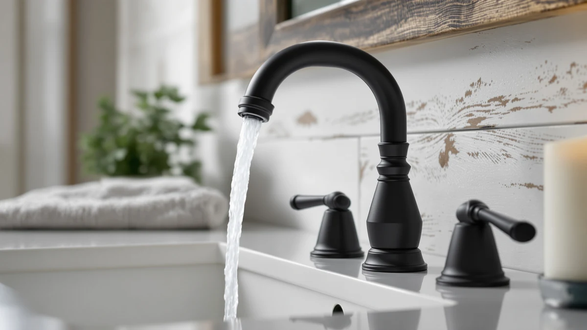

The Best Brushed-nickel Vanity Faucets (2026)
Prices and picks verified as of August 2026. Independent, reader-supported reviews.


Quick Answer
The best brushed-nickel vanity faucets pair a spot-resistant finish with a body that survives years of hot and cold cycling, and the Moen Ronan Spot Resist Brushed delivers both for $69.65. It led the seven faucets we compared on finish durability and centerset compatibility, while the $29.99 Hurran runner-up covers tight budgets without dropping the bundled supply lines and drain.
Our pick: Moen Ronan Spot Resist Brushed — $69.65 Check Price on Amazon
Bottom line: our top pick is the Moen Ronan Spot Resist Brushed Nickel Two-Handle 4" Centerset at $69.65. The best budget option is the Bathroom Faucets for Sink 3 Hole at $29.99.
Things to Know Before You Buy
- Measure your sink's hole spacing before you shop. Centerset faucets fit a standard 4-inch, three-hole layout, while widespread faucets need 8 to 16 inches between the outer holes, and the two formats do not interchange without a deck plate.
- Brushed nickel hides fingerprints and water spots better than chrome or stainless, which matters if your household skips the daily wipe-down.
- Prices in this group run from $29.99 to $147.87. Past $100 you're mostly paying for brand parts support and drain hardware, not a stronger stream.
- A pull-out or pull-down sprayer adds reach for cleaning the basin, but it also gives the faucet a moving part that a fixed spout doesn't have.
- Check what's included. Some of these faucets bundle supply lines and a drain assembly, and others expect you to buy those separately.
The best brushed-nickel vanity faucets give a busy bathroom sink a finish that shrugs off water spots and fingerprints instead of showing every touch by Tuesday. We compared seven brushed-nickel vanity faucets for this guide, from a $29.99 centerset to a $147.87 Delta widespread, and ranked them on finish durability, hole compatibility, and the hardware included in the box.
The Moen Ronan Spot Resist Brushed took the top spot at $69.65. It combines a fingerprint-resistant finish with a push-down drain and fits the standard 4-inch centerset that most vanities already have, so installation doesn't require swapping your sink hardware. If you want to spend less, the $29.99 Hurran runner-up bundles supply lines and a pop-up drain for buyers who don't want to shop for extra parts, and the two Delta picks answer anyone who wants a widespread faucet backed by a national parts network.
Below you'll find our full picks, the criteria we used, a comparison table, and answers to the questions buyers ask most about brushed-nickel vanity faucets. Each product section includes the drawbacks we found, because a $45 faucet with a hidden weak point costs more over time than a $90 one that lasts.
Why You Should Trust Us
I'm Ilane Tall, and I run Best Bathroom Faucets, where I research and compare bathroom fixtures for US buyers. For this guide to the best brushed-nickel vanity faucets I worked through the seven models below spec by spec, compared finish photos across different lighting conditions, and read owner feedback on each one, weighting reports filed after months of daily use over first-week impressions. I have no relationship with any faucet brand. When you buy through our links we earn an affiliate commission, and that commission stays the same no matter which faucet you choose, so we gain nothing by steering you toward one model over another.
How We Picked
We started with the brushed-nickel vanity faucets on Amazon that had enough purchase history and product documentation to judge fairly, then narrowed the field hard. We dropped faucets with vague or missing hole-spacing details, since a centerset faucet on a widespread sink is a return you can't undo cheaply. We also cut listings with no drain or supply-line information, because that ambiguity usually means an extra purchase you didn't budget for.
That left seven brushed-nickel vanity faucets across three price tiers: under $50, the $90 to $95 mid-range, and Delta's $125 to $150 widespread territory. We kept both Delta picks in the guide because a pull-down sprayer and a fixed two-handle widespread answer different buyers even at similar prices.
How We Compared
We evaluated each brushed-nickel vanity faucet against the same checklist. Finish quality came first: we compared manufacturer photos against customer photos in daylight and vanity lighting, looking for the greenish or yellow cast that separates genuine brushed nickel from a cheap plated look. Then we checked installation details, including hole configuration, whether supply lines and a drain shipped in the box, and how the manufacturer describes the connection hardware. Finally we read owner-reported issues for each model, weighting drain problems and finish wear around the handle most heavily, since those two failures show up long after the return window closes.
Our Picks

Moen Ronan Spot Resist Brushed
What we like
- Spot Resist Nickel finish is engineered specifically to hide fingerprints and water spots
- Two-handle lever design gives you precise, separate control over hot and cold
- Push-down drain skips the fussier pop-up linkage found on older faucet styles
Flaws but not dealbreakers
- Amazon doesn't list a published rating or review count for this finish variant yet, so lean on the wider Moen Ronan line's track record
- Two-handle format uses more counter space than a single-lever faucet
| Material | Brass + finish |
| Size | Centerset (Pack of 1) |
The Moen Ronan earns the top spot in this guide to the best brushed-nickel vanity faucets by nailing the basics at $69.65. Moen names the finish Spot Resist Nickel, and the label is not marketing filler. That coating is formulated to resist the fingerprints and water spots that dull a bathroom faucet's shine within weeks, and it holds an even brushed texture across the spout and both handles. The two-handle design mounts on a standard 4-inch centerset, model 84022SRN, so it drops into the sink most US vanities already have without a deck plate or extra drilling.
The push-down drain is the detail that separates this faucet from the pack. Instead of a pop-up assembly with a pivot rod that eventually rattles loose, you press the stopper directly, which means fewer parts that can fail under the sink. The tradeoff is modest. Two separate handles take up more real estate than a single lever, and because Moen sells the Ronan line in several finish and configuration variants, the reviews you find for this exact listing may be thinner than for the faucet family overall. Neither issue changes the recommendation. For a standard vanity, this is the strongest all-around pick of the seven.

Bathroom Faucets for Sink 3
What we like
- Ships with two 24-inch supply lines and a matching pop-up drain, so you aren't shopping for extra parts
- 1.2 GPM aerator is registered with the California Energy Commission for verified water savings
- Lowest price in this comparison at $29.99
Flaws but not dealbreakers
- Hurran is a newer import brand without the decades of parts support Moen or Delta offer
- Amazon shows no published rating or review count for this listing, so weigh the included specs against your own risk tolerance
| Material | Brass + finish |
| Size | — |
At $29.99, the Hurran undercuts every other faucet in this brushed-nickel vanity faucet comparison by at least a third, and it doesn't cut the corner that usually explains a price that low. The listing includes two 24-inch braided supply lines and a matching pop-up drain with an integrated strainer, which means the total cost of getting water running is close to the sticker price. Competing faucets often leave those parts out, and by the time you add them separately the gap to our top pick narrows fast.
The aerator is the other detail worth flagging. It's rated at 1.2 gallons per minute and registered with the California Energy Commission, so the water savings are documented rather than a marketing claim. What you give up is brand history. Hurran hasn't been in the US market long enough to build the parts pipeline that Moen and Delta have, and this listing carries no published star rating yet. For a rental unit, a guest bath, or a flip where the budget has a dozen other line items, that tradeoff is easy to accept.

FELIXBATH Bathroom Sink Faucet with
What we like
- Pull-out sprayer head adds reach for washing the basin, rinsing pets, or filling buckets
- Two water flow modes switch between a full stream and a spray without extra hardware
- Fits the standard 3-hole, 4-inch centerset most vanities already have
Flaws but not dealbreakers
- FELIXBATH is a newer brand without the long track record of Moen or Delta
- Two-handle design means less precise single-motion temperature control than a lever faucet
| Material | Brass + finish |
| Size | — |
The FELIXBATH sits between our top pick and the budget Hurran at $45.04, and it earns its slot with a feature neither of those faucets has: a pull-out sprayer. The sprayer head extends on a hose, which turns rinsing the basin or filling a bucket from an awkward angle into a quick, direct task. Two water flow modes let you toggle between a standard stream and a wider spray, a convenience usually reserved for kitchen faucets that shows up here on a vanity model built for a lead-free 3-hole, 4-inch centerset.
The compromises are the ones you'd expect from a younger import brand. FELIXBATH doesn't have Delta's or Moen's decades of US parts availability, so if a cartridge ever needs replacing years down the line, sourcing one may take more searching. The two-handle layout also asks you to dial in temperature across two controls instead of one lever's single motion. For a vanity faucet that gets daily use and benefits from that sprayer reach, both tradeoffs are reasonable at this price.

Delta Arvo Brushed Nickel Faucet
What we like
- Delta backs the Arvo with decades of US parts availability and a cartridge compared to 500,000 uses
- Wrench-free quick-connect hose clicks audibly when properly seated, cutting down on installation errors
- SpotShield finish targets the same fingerprint and water-spot resistance as our top Moen pick
Flaws but not dealbreakers
- At $147.87 it costs roughly twice the median price in this group
- The 8-inch widespread format needs 8 to 16 inches between the outer holes, so it won't fit a standard centerset sink
| Material | Brass + finish |
| Size | — |
The Delta Arvo answers the question every import faucet in this guide raises: what does the extra money buy? At $147.87 the widespread Arvo does the same core job as our top pick, delivering water through a brushed-nickel spout, but Delta backs it with a valve cartridge compared to 500,000 uses and a wrench-free, quick-connect installation that audibly clicks when the water lines are properly seated. For a wide vanity where the eight-inch spread rules out a centerset faucet, that combination of durability testing and easy install carries real weight.
The SpotShield finish plays the same role here that Spot Resist plays on the Moen Ronan, resisting fingerprints and water spots across daily use. The tradeoff is straightforward. This is the priciest faucet in the comparison, and the widespread format only works if your sink already has that 8 to 16 inch hole spacing. Buy it for the fit and the support network behind the brand, not because it out-performs the cheaper picks at the tap.

Moen Idora Spot Resist Brushed
What we like
- High-arc spout adds clearance for washing hands or filling containers under the faucet
- Spot Resist finish matches the same fingerprint-resistant coating as our top Moen pick
- Drain assembly is included, so there's no separate purchase to plan for
Flaws but not dealbreakers
- Centerset-only fit means it won't work on a widespread 8-inch vanity
- Two-handle design uses more counter space than a single-handle faucet
| Material | Brass + finish |
| Size | 4 Inch Centerset |
The Moen Idora shares its Spot Resist finish with our top pick but trades the Ronan's flatter profile for a high-arc spout, model 84115SRN, that lifts the water delivery point well above the basin. That extra clearance makes it easier to wash hands without brushing knuckles on the spout or to fill a cup or a small container, a detail that matters more than it sounds like in a household with kids or anyone who wears bulky rings.
At $48.38 it lands squarely in the middle of this brushed-nickel vanity faucet group, and it includes a drain assembly in the box, so setup doesn't require a separate hardware run. The catch is the same one that applies to most of our centerset picks: it needs the standard 4-inch hole spacing, and it won't adapt to a widespread sink. Within that constraint, this is a dependable Moen at a price that undercuts the brand's premium lines.

Pfister Pasadena 8 inch Widespread
What we like
- WaterSense certification confirms verified water savings instead of a marketing claim
- Push & Seal drain opens and closes without tools or extra hardware
- Pfast Connect hardware speeds up installation compared with a standard widespread kit
Flaws but not dealbreakers
- Needs the same 8 to 16 inch widespread hole spacing as the Delta Arvo
- Pfister's dealer and parts network is smaller than Delta's or Moen's
| Material | Brass + finish |
| Size | 1 Pack |
The Pfister Pasadena is the one faucet in this brushed-nickel vanity faucet lineup with a third-party water-savings guarantee. WaterSense certification means the EPA has verified the flow rate rather than taking Pfister's word for it, which matters if your household is trying to cut water use without sacrificing pressure. The Push & Seal drain backs that efficiency focus with convenience: press to seal, press again to open. There's no tool required and no pop-up linkage to fuss with.
Pfast Connect hardware trims installation time versus a typical widespread kit, a real advantage given that widespread faucets generally take longer to set up than a one-piece centerset. At $92.79 it sits between the mid-range picks and the two Delta faucets, and like the Arvo it requires an 8 to 16 inch hole spread, so measure first. The one soft spot is brand reach. Pfister doesn't have quite the retail and parts footprint of Delta or Moen, though the WaterSense badge and tool-free drain make a strong case on their own.

Delta Faucet Broadmoor Pull Down
What we like
- MagnaTite Docking uses a magnet to keep the pull-down sprayer seated instead of drooping over time
- Same 500,000-use cartridge rating and wrench-free installation as the Arvo
- Pull-down design adds reach that the fixed-spout picks in this group don't have
Flaws but not dealbreakers
- At $126.43 it's the second most expensive faucet in this comparison
- Requires the same widespread hole spacing as the Arvo and the Pfister Pasadena
| Material | Brass + finish |
| Size | — |
The Delta Broadmoor takes the widespread format of the Arvo and adds a pull-down sprayer, which none of the other widespread faucets in this guide offer. MagnaTite Docking uses a magnet to snap the sprayer head back into place after each use, addressing the drooping hose that undermines cheaper pull-down designs within a year of daily use. It carries the same 500,000-use cartridge rating and audible-click, wrench-free installation as the Arvo, so the durability testing behind the two Delta picks matches.
At $126.43 it costs less than the fixed Arvo despite the added sprayer mechanism, which makes it the more feature-rich of the two Delta widespread options for most buyers. The requirements are unchanged from the rest of the widespread group: you need that 8 to 16 inch hole spread, and you're paying a premium over the centerset picks either way. If your vanity already fits that spacing and you want sprayer reach, this is the pick to compare against the Arvo.
Quick Comparison
| Product | Material | Price | Rating | Best for | Get it |
|---|---|---|---|---|---|
| Moen Ronan Spot Resist Brushed | Brass + finish | $69.65 | 4 | Best overall brushed-nickel vanity faucet for standard centerset sinks | View on Amazon → |
| Bathroom Faucets for Sink 3 | Brass + finish | $29.99 | 4 | Tight budgets that want supply lines and drain included | View on Amazon → |
| FELIXBATH Bathroom Sink Faucet with | Brass + finish | $45.04 | 4 | Buyers who want a pull-out sprayer at a mid-range price | View on Amazon → |
| Delta Arvo Brushed Nickel Faucet | Brass + finish | $147.87 | 4 | Widespread sinks that want Delta's parts support | View on Amazon → |
| Moen Idora Spot Resist Brushed | Brass + finish | $48.38 | 4 | Vanities wanting extra spout clearance | View on Amazon → |
| Pfister Pasadena 8 inch Widespread | Brass + finish | $92.79 | 4 | Widespread sinks that want WaterSense-certified savings | View on Amazon → |
| Delta Faucet Broadmoor Pull Down | Brass + finish | $126.43 | 4 | Widespread sinks that want pull-down sprayer reach | View on Amazon → |
The Competition
The rest of the brushed-nickel vanity faucet field we reviewed fell to a handful of repeating problems. The largest group listed hole configurations so vaguely that we couldn't confirm centerset versus widespread fit from the product page alone, and a vanity faucet that doesn't match your sink's drilling is a return, not a bargain. We dropped those regardless of price.
A second group failed on the finish itself. Photos showed a yellow or greenish cast that reads as brushed nickel in a thumbnail but looks wrong next to real brushed-nickel hardware once it's installed. We also passed on listings with no drain or supply-line details at all, since that ambiguity almost always means an unplanned second purchase once the box arrives. None of the seven faucets that made this guide had that problem, which is exactly why they made it.
Frequently Asked Questions
Is brushed nickel a good finish for a bathroom vanity faucet?
Brushed nickel is one of the most practical finishes for a vanity faucet. Its textured surface scatters light, so fingerprints and water spots show far less than they do on polished chrome or stainless, and the warm gray tone matches most vanity hardware. It costs slightly more than chrome on comparable models but needs less frequent wiping to look clean.
What is the difference between centerset and widespread vanity faucets?
A centerset faucet has the spout and handles mounted on a single base that fits a standard 4-inch, three-hole sink. A widespread faucet separates the spout and handles into individual pieces connected under the counter, typically spanning 8 to 16 inches between the outer holes. Measure your sink's hole spacing before buying, since the two formats are not interchangeable without a deck plate.
Which brushed-nickel vanity faucet is the best overall?
The Moen Ronan Spot Resist Brushed is the best brushed-nickel vanity faucet for most bathrooms at $69.65. It pairs a fingerprint-resistant finish with a simple push-down drain and fits the standard 4-inch centerset most vanities already have. If your sink has a wider 8-inch spread, the Delta Arvo at $147.87 is the buy-once alternative.